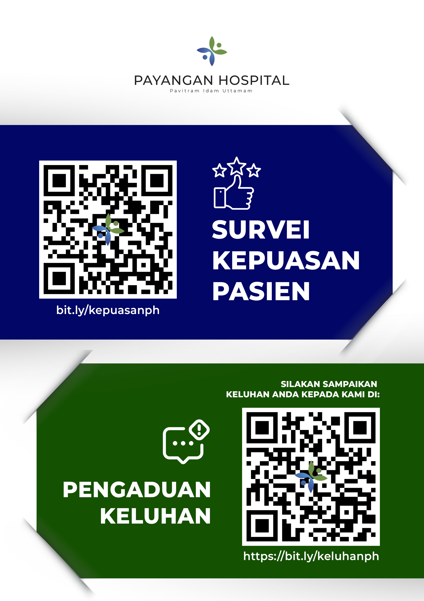

Hasil IKM Per Tahun
Grafik Indeks Kepuasan Pasien
Perkembangan nilai IKM dari tahun ke tahun berdasarkan hasil survei.
Tabel Detail Survei
| Tahun | Periode Survei | Nilai IKM | Konversi (×25) | Mutu Pelayanan | Kinerja Unit | Jumlah Responden |
|---|
Nilai Per Unsur Pelayanan
Penilaian kepuasan pasien berdasarkan 9 unsur pelayanan sesuai Permenpan RB No. 14 Tahun 2017.
Metodologi Survei
Survei Kepuasan Masyarakat (SKM) dilaksanakan mengacu pada Peraturan Menteri PAN-RB No. 14 Tahun 2017 tentang Pedoman Penyusunan Survei Kepuasan Masyarakat Unit Penyelenggara Pelayanan Publik.
- Pengumpulan data dilakukan melalui kuesioner yang dibagikan kepada pasien rawat jalan dan rawat inap.
- Nilai IKM dihitung dari rata-rata tertimbang 9 unsur pelayanan dengan skala 1–4.
- Konversi nilai: Nilai rata-rata × 25 = Nilai IKM (skala 100).
- Kategori: A = Sangat Baik (88,31–100) · B = Baik (76,61–88,30) · C = Kurang Baik (65,00–76,60) · D = Tidak Baik (<65,00).
Survey Kepuasan & Keluhan Pasien
Pindai QR code berikut untuk mengisi survei kepuasan pasien atau memberikan keluhan Anda. Masukan Anda sangat berarti untuk meningkatkan kualitas pelayanan kami.

Dokumen Hasil Survey IKM
Berikut adalah dokumen hasil survei Indeks Kepuasan Masyarakat (IKM) dari tahun ke tahun yang telah dilaksanakan oleh Payangan Hospital.


Dokumen IKM Tahun 2024 & 2025
Dokumen hasil survei Indeks Kepuasan Masyarakat (IKM) untuk tahun 2024 dan 2025 disimpan dalam file Word berikut.